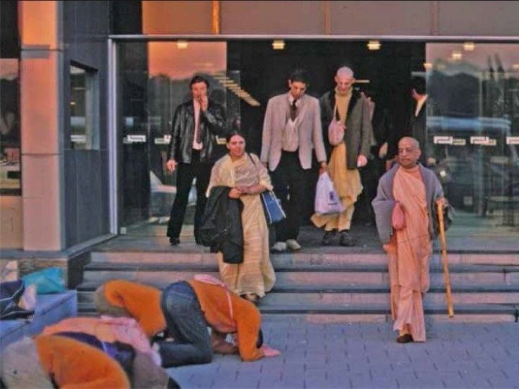

First Meeting of Arundati Dasi at NY airport.
Posted on : 5th November, 2024

Arundati dasi : There was a whole bunch of us waiting at NY airport. This one gate , and all of a sudden somebody saw Prabhupada coming from this other gate and he said, "Oh, Srila Prabhupada's coming from over there," and we all ran to greet Srila Prabhupada and we fell down at his lotus feet. I was a new devotee so I didn't know how long you're supposed to stay down. So I stayed down for quite a while, and then I kind of peeked my head up to see if everybody had gotten up yet. Everyone was up, and Prabhupada was standing right over above me. I looked up into his lotus eyes and he went and patted my head, so I got up. So that was my first memory of Prabhupada. I was initiated by mail probably a few months before he had come to New York.
Probably that's the reason of devotees paying Long Dandavats to Srila Prabhupada, to get touched by the touchstone!
Jay Prabhupād!
~ Admin